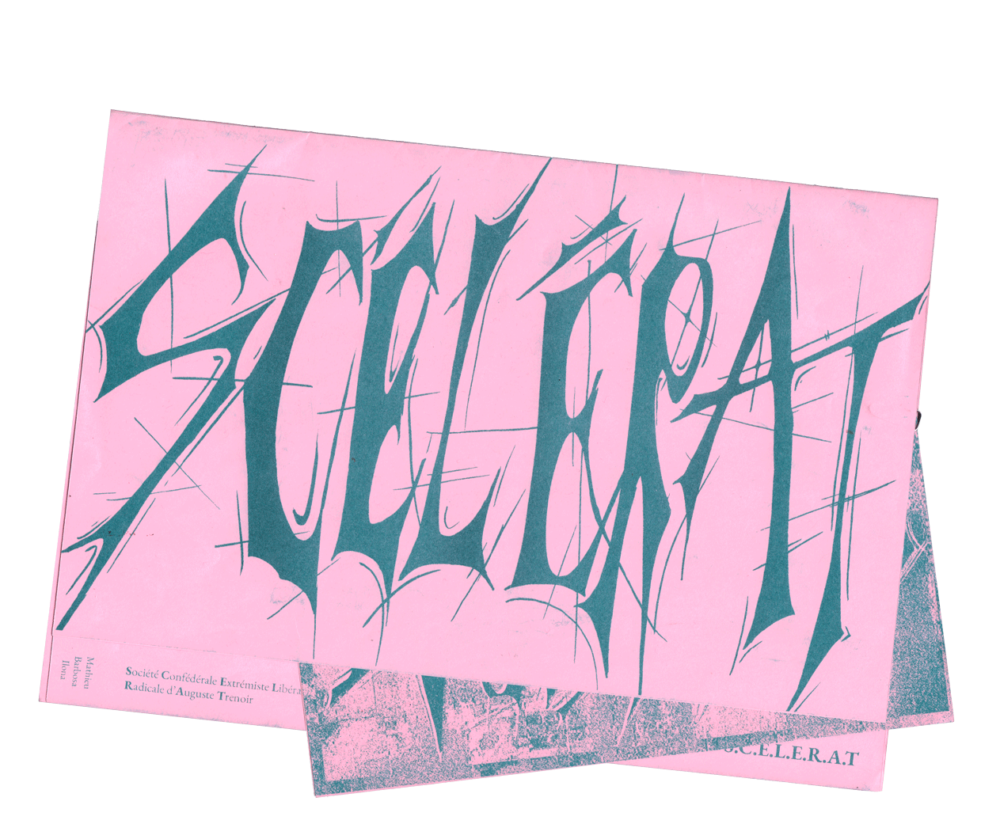

ZineClub
Réalisé en risographie, le Zineclub présente un club d'école sur le thème de la gravure. En quelques pages, l'édition retrace les bases des techniques d'impression, présente les membres puis leur travaux. La notion de fragilité des materiaux employés et des estampes se retrouve au fil de la lecture: pages après pages, le visuel se déconstruit de plus en plus, jusqu'à en devenir illisible et ne plus faire sens.
TYPO UTILISÉE: BianZhiDai by Xiaoyuan Gao, notyourtypefoundry. Distributed by velvetyne.fr.
< Retour
